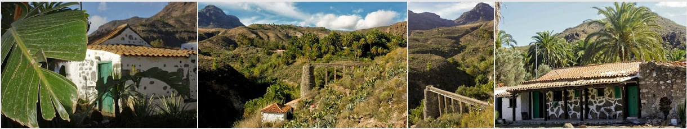

Lugar del evento
La fiesta va tener lugar en el Hotel Rural Molino de Agua a partir de las 7 de la tarde. El “Molino de Agua”, situado en el municipio de San Bartolomé de Tirajana (Gran Canaria), fue conocido hasta principios del Siglo XX como “Molino de Cazorla” o “El Molino de Arriba”. Localizado en el pago de “Los Cercados Altos de Fataga”, es uno de los mejores ejemplos de la recaudación y muela de agua en nuestra isla. Junto al molino se conservan restos de una antigua cueva vivienda con una cocina de leña y un horno de pan.
La web del hotel: www.elmolinodeagua.com
Para llegar a Hotel Rural Molino de Agua , primero hay que dirigirnos a Fataga, un pueblo localizado en las montañas, en el municipio de San Bartolomé de Tirajana, sólo a unos 15 minutos de la zona turística de Maspalomas y Playa del Inglés. La carretera que va a Fataga comienza en San Fernado, una urbanización situada justo a lado del la autopista. Abajo, a la izquierda vemos la salida de la autopista.
Transporte
Taxi Maspalomas: 928721084
Guaguas: www.globalsu.net
Linea 18: Maspalomas - Tejeda. Paradas en el mercado y Faro de Maspalomas.
Guagua lanzadera
Maspalomas (Mercado municipal) – Finca Molino de Agua. Ida (18h)y vuelta (3h o 5h, segun ocupación) con paradas en hoteles próximos a Fataga.
Si estás interesad@ inscribete aquí: doodle.
Alojamiento
Ante la alta ocupacion del hotel principal, sugerimos los posibles siguientes alojamientos cercanos:
Servicios
Para los que quieran contratar un servicio de peluquería en el hotel para la tarde de la boda, las tarifas son las siguientes:
- Cabello corto: peinar 35 €.
- Cabello medio: peinar 45 €, semirecogido 60 € y recogido 70 €.
- Cabello largo: Peinar 55 €, semirecogido 60 € y recogido 70 €.
Para reservar, contacta con la peluquería a través de su telefono: Tf: 928 14 61 87
Su facebook: http://www.facebook.com/CuttingEssence